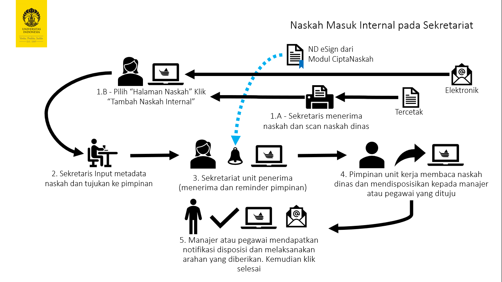
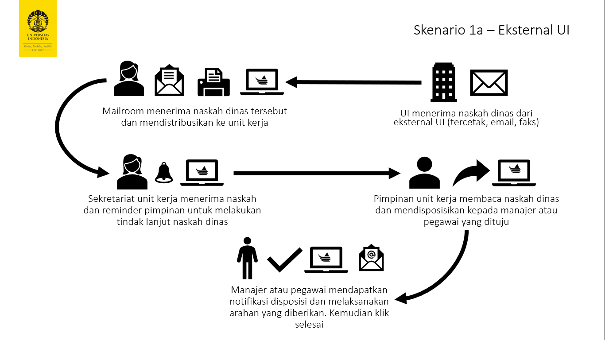
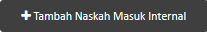
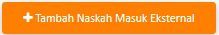
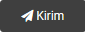
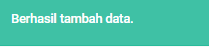

Penerimaan Naskah Masuk¶
Interface pada andieni terdiri dari beberapa bagian, berikut adalah penjelasan bagian tersebut.
Halaman Naskah¶
Halaman naskah merupakan halaman default dari Andieni, pada bagian ini interaksi anda akan banyak tertuju dalam pemantauan naskah masuk maupun disposisi masuk.
Naskah Internal¶
Naskah masuk internal merupakan bagian yang digunakan untuk interaksi naskah masuk dari internal UI. Baik diterima dalam bentuk tercetak, elektronik, atau langsung melalui Andieni-CiptaNaskah.
Naskah Eksternal¶
Bagian ini digunakan untuk mencatat naskah masuk dari eksternal universitas. Baik diterima dalam bentuk tercetak maupun elektronik.
Input Naskah Masuk¶
Untuk naskah masuk yang anda terima dalam bentuk tercetak atau elektronik di luar sistem Andieni, maka silahkan tambahkan pada naskah masuk internal (berasal dari entitas di lingkungan UI) dan naskah masuk eksternal (berasal dari entitas di luar UI).
Klik -> Tambah Naskah Masuk Internal atau Tambah Naskah Masuk Eksternal
 Isikan metadata sesuai dengan naskah yang anda terima, berikut penjelasan setiap field yang perlu diisi:
Field |
Penjelasan |
|---|---|
Sifat Naskah |
Pilih sesuai dengan sifat naskah (Biasa/ Rahasia/ Sangat Rahasia) |
Jenis Naskah |
sudah terisi |
Asal Naskah |
Freetext, silahkan tuliskan unit pengirim |
Nomor Naskah |
Tuliskan sesuai dengan nomor surat pada naskah |
Tanggal Naskah |
Isikan tanggal yang tertera pada naskah (bukan tanggal diterima) |
Perihal |
Isikan dengan perihal surat |
Tujuan Distribusi |
Pilih pejabat di lingkungan UI |
Klasifikasi |
Pilih indeks kegiatan sesuai klasifikasi arsip |
Isi singkat |
Tuliskan informasi penting misal deadline, agenda rapat, dsb |
Referensi |
Diisi jika surat yang anda terima terkait dengan naskah dinas lain |
Unggah |
Pilih file yang telah anda scan atau terima secara elektronik |
Kemudian klik -> Kirim
Maka akan muncul informasi "Berhasil tambah data"
Data yang telah ditambahkan akan muncul pada tab Baru
Catatan
Apabila naskah telah dibuka penerima maka akan berpindah ke tab Sudah Diterima